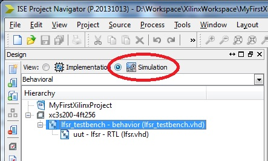
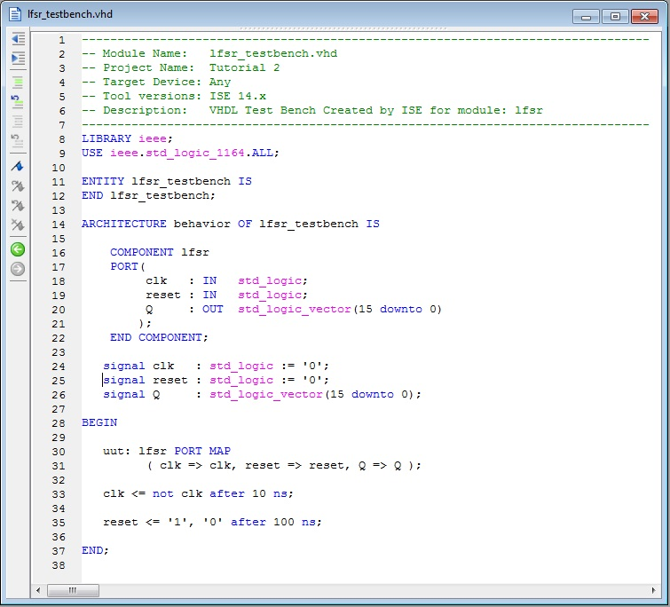

EEE6225 Systems Design
| Tutorial 2: Linear Feedback Shift Register |
| Creating a testbench |
We could simulate the LFSR and use Modelsim commands to manually drive inputs but this can be pretty tedious and time-consuming - especially if you have to keep re-simulating a design. To avoid this, we can write another piece of VHDL to test the LFSR design. To do this we will create another VHDL file and use it as a test bench. The observent may have noticed that the ISE tool has two modes of operation: one for Implementation and the second for Simulation. At this time it would be appropriate to switch to the Sumulation view. This is shown in Figure 1. |
|  Figure 1. Changing to Simulation view |
To create a test-bench for the LFSR module, use Project Navigator > New Source to get the New dialogue box but this time, instead of creating a VHDL module, choose instead to create a VHDL Test Bench. Give it file name lfsr_testbench. This file will have an empty entity clause and a template architecture that already contains a component declaration matching our lfsr entity plus some signals and an instance of the component with its ports mapped to those signals. Modify this architecture to match the one shown in Figure 2: |
|  Figure 2. Example VHDL lfsr_testbench.vhd |
Note: In case you haven't spotted it, default template process has been removed and replaced it with a couple of concurrent signal assignments plus I've added an initial state of '0' onto the two internal signal assignments for clk and rst. EXERCISE: What do you think this bit of VHDL is doing? A more complex example of a testbench is available here. |
| Continue on to Simulating the design |